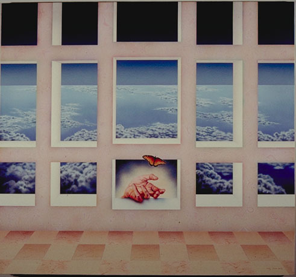

Man, Woman, Birth, Death, Infinity
Cathy Clerk

1998,
Acrylic on canvas,
44″ x 48″
I began work on this painting shortly before Martha’s death. I knew I wanted sky above clouds in it, and large windows, but other than that I wanted to see where the painting would take me. This past year I’ve been trying to let go of rigid planning in my work, to allow spiritual guidance increasingly into the creative process. Martha has, from the day we met 12 years ago, occupied a place close to my heart. Whenever talking to her, time and distance became illusions, and our communication the only reality. It was therefore no surprise that the end of her Earthly journey became enmeshed with the painting I was working on, that our communication continued through the medium we had in common, the paint.
Immediately I knew I had to portray her Earthly life in transition to the Spiritual one beyond. The images to best depict this came to me as a hand releasing a butterfly. The walls, or “structure of past perceptions” perhaps, are covered with symbols that mankind has been using for centuries. Our reality grows from these roots, and transcends into the deeply mysterious universe. These last three words are how Martha described her view of “God” to me just six months ago. I wanted the painting to be a tribute to her extraordinary soul.